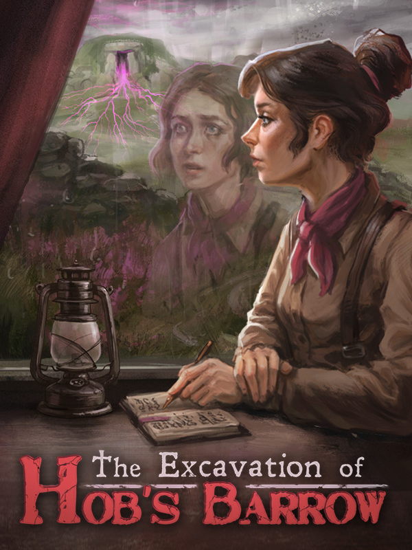

The Excavation of Hob's Barrow
The Excavation of Hob's Barrow
Details
|  | |
| Playtime | 8h 22m 0s |
| Last Activity | 2022-10-26 13:54:41 |
| Added | 2023-08-11 0:29:07 |
| Modified | 2025-10-02 9:55:10 |
| Completion Status | Completed |
| Library | Steam |
| Source | Steam |
| Platform | Macintosh PC (Linux) PC (Windows) |
| Release Date | 2022-09-28 |
| Community Score | 78 |
| Critic Score | 74 |
| User Score | |
| Genre | Adventure Point-and-click Puzzle |
| Developer | Cloak and Dagger Games |
| Publisher | Wadjet Eye Games |
| Feature | Single Player |
| Links | Steam Official Website GOG Twitch Nintendo Bluesky |
| Tag | Adventure Atmospheric Cinematic Dark Drama Emotional Female Protagonist Horror Indie Interactive Fiction Investigation Lovecraftian Mystery Pixel Graphics Point & Click Puzzle Retro Singleplayer Story Rich Thriller |
Description


Antiquarian Thomasina Bateman is writing a book on the barrows of England, documenting the treasures she finds buried within. When an intriguing letter summons her to the small village of Bewlay, tucked away in the remote countryside, she sets off by train with her assistant a day behind.
Upon her arrival, however, the mysterious man who summoned her is nowhere to be found. Her assistant never arrives. A stubborn landowner refuses access to the barrow, and the locals are wary of this woman who is traveling alone and (gasp!) wears trousers.
The excavation of Hob’s Barrow is off to a rocky start. And then Thomasina starts having strange dreams…


- A dark, complex and evolving storyline featuring interwoven elements from real English folklore.
- Traditional point and click adventure game puzzles and interactions, with an easy modern interface.
- A cast of intriguing characters, from suspicious villagers to sickly vicars to lordly landowners, all with their own unique stories and motives.
- A distinct folk horror tone and grounding.
- Evocative pixel-art graphics, featuring cut-scenes and engaging animations.
- A suitably atmospheric original soundtrack from The Machine. The Demon. - one half of the duo behind the award-winning "Football Game" soundtrack.
- Fiends in the furrows, the smell of damp soil, and a cat or two.